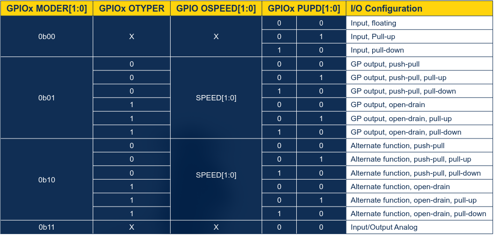
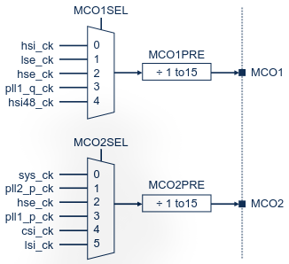
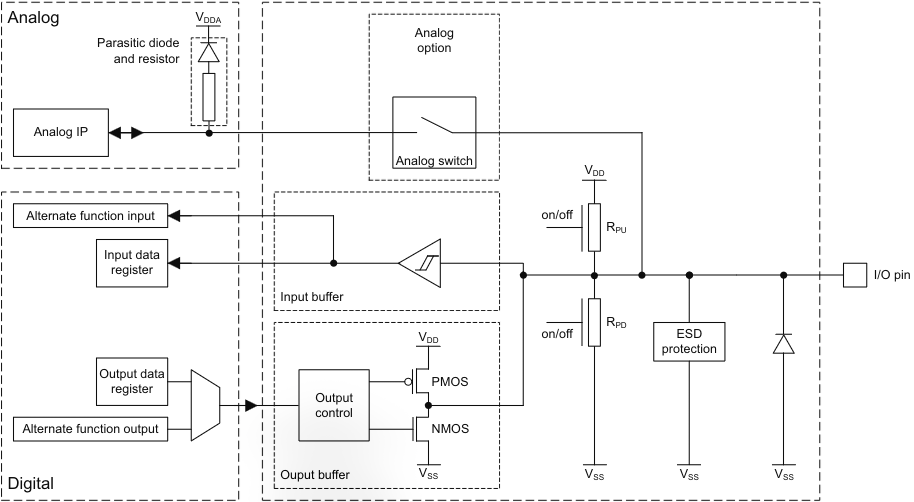

Contents
STM32 GPIO (General Purpose I/O) Explained
GPIO on the STM32 is a versatile controller which lets you do the part of embedded everyone thinks about first: use the board's pins to talk with peripherals.
And surprisingly, unlike a lot of the STM32 world, GPIO is relatively simple to understand and use!
So let's start!
Overview
GPIO is a controllable block that allows independent configuration of each pin on the development board. Pins are the metal bits you connect a wire, pin headers, or breadboard holes to.
You can do a lot of things with these pins:
- use them as output to give data/instructions to an external peripheral (e.g. an LED, I2C screen)
- use them as input to receive data/instructions (e.g. UART data transfer, reading from a sensor)
- ‘alternate functions', like providing an I2C clock line
However, GPIO isn't one central block. There are multiple ports, each controlling up to 16 pins on its own. Each port has a name like GPIOx, where x is a letter of the alphabet, in chronological order - you'll see this generalised term referenced a lot:
- GPIOA
- GPIOB
- GPIOC
- etc.
Pin Modes
Each pin can be configured differently and independently of all other pins, which is done across 5 axis (these axis are not mutually exclusive - they interact with each other in various ways):
- Mode
- Output type
- Speed
- Pull-up/pull-down
- Alternate function
Mode
This defines how the pin operates. There are 4 options:
- Input - read pin state
- Output - drive pin state
- Alternate function - hand pin over to peripheral, it'll manage it
- Analog - disconnect digital circuitry, used for analog or power saving when pin is unused (usually default mode)
On the STM32H7RS, the GPIO mode is controlled through the GPIOx_MODER register, again replacing the 'x' with your GPIO port letter.
Output Type
These configuration settings are only valid when the pin is doing output, either in output mode or alternate function mode, as long as it's outputting something and driving the pin state.
Only 2 options exist here:
- Push-pull - actively drives pin high and low
- Open-drain - only actively drives low, high has to be driven separately (e.g. internal pull-up resistor, external signal/resistor)
Open-drain is commonly used for any bus that's shared by multiple devices. That way, if a device wants to start sending data, it just needs to drive the weakly-pulled 1 to a 0, and the other devices will see it. If every device on a shared bus was push-pull, then as soon as one device wants to change the line state from a 1 to a 0, it would cause a conflict with the other devices, which are actively keeping it at a 1.
On the STM32H7RS, the GPIO output type is controlled through the GPIOx_OTYPER register.
Speed
In this case, 'speed' specifically refers to the slew speed, which is how fast the pin changes its state from 0-to-1 and 1-to-0 when the pin is driven by the board, and how much current it can source/sink (essentially, it makes transition edges steeper and thus makes transitions faster).
This does come with 2 important tradeoffs:
- higher power consumption
- more EMI emissions
As for the actual options, at least on the STM32H7RS and its reference manual, they are:
- low speed
- medium speed
- high speed
- very high speed
And yes, these are cryptic, which is why you need to go to your specific board's datasheet to find out what clock frequency ranges they recommend using each level for. It's better to check than to default to 'very high' for every single pin
For the STM32H7RS specifically, the GPIO speed is controlled through the GPIOx_OSPEEDR register, and here are the ranges:
- Low speed: 5-16 MHz
- Medium speed: 12-60 MHz
- High speed: 30-133 MHz
- Very high speed: 50-200 MHz
This means is if your GPIO pin expects to operate at a specific frequency, you'd pick the slowest OSPEEDR option to match.
Pull-up/pull-down
These are your regular pull resistors:
- in "pull-up" mode, a resistor weakly pulls the GPIO pin to a logical state of 1 when it would otherwise be floating
- in "pull-down" mode, a resistor weakly pulls the GPIO pin to a logical state of 0 when it would otherwise be floating
- you can also select neither, mentioning for completeness
Because it's a weakly pulling resistor, it can keep a floating line at a definite 0/1, but as soon as something wants to output a different logical level, its voltage overwhelms what the resistor can let through, and so a pull-down resistor doesn't block a 1 from being actively driven by something, and vice-versa.
That's what makes pull resistors so good for shared buses.
A common pairing here is open-drain output mode with a pull-up resistor. The pull-up keeps the line at a 1 when it's unused (or when a 1 is meant to be signalled), and the open-drain part pulls the line actively to a 0 when it wants to signal a 0.
As always, on the STM32H7RS, this is controlled by the GPIOx_PUPDR register.
Alternate Function
Without alternate functions, GPIO is only able to be controlled manually and used to read the pin state externally.
Alternate functions allow peripherals to take over the pin and use them to interface with the 'outside world'. I'm talking things like I2C providing its clock line, UART transmit/receive lines, external debugger pins, basically things which make your board more than just a fancy LED blinker with some internal logic - the part which makes embedded systems... well... embedded.
That's it for the over-the-top introduction, I promise.
Just about every pin can be set to serve an alternate function through its AF (Alternate Function) number, AF0-AF15. If the pin is pin 0-7, you write into the GPIOx_AFRL register, and if it's pin 8-15, you write to GPIOx_AFRH, where L = low-order and H = high-order.
When an alternate function is set, it just flips a multiplexer which routes if GPIO or the peripheral gets control of the pin.
You'll have to cross-reference what each AF number actually means for each GPIOx port, which you'd usually find in your product datasheet (not reference manual), as there are too many to list here - even just on the STM32H7RS.
It's also worth noting that multiple peripherals can share the same pin - a multiplexer selects which alternate function gets access to it (through the AF number) as only one peripheral can use it at a single time.
The Registers, Combined
The table below (from the STM32H7RS GPIO presentation, link in sources) shows how a pin is configured based off what its bits in each register is set to.

After Reset
The default state for GPIO pins after a reset is:
- alternate functions are not active
- most pins are in analog mode for power saving
Debug pins, however, are an exception. Any JTAG/SWD pins (pins configured in alternate function, pull-up/pull-down mode) remain unaffected during and after a reset.
The H7RS presentation has a list of which pins remain and what configuration they're in.
Read/Write To Pins
Once you've configured your pins, you'd do your typical day-to-day access using these registers:
GPIOx_IDR- read-only, tells you what logic level every pin on the port is at (0 or 1)GPIOx_ODR- read/write, lets you read a pin's state and drive it by writing* - obviously that only does something when you have the pin in output modeGPIOx_BSRR- write-only, used to set/reset a specific pin's logical level**GPIOx_BRR- write-only, used to reset a pin's logical level - similar to BSRR but it can only reset a pin to 0
There is also this interesting register - GPIOx_LCKR - which locks a pin's configuration and prevents any further modifications to it until a MCU/peripheral reset.
* This is not an 'atomic' write - it can not be done in one Assembly instruction as you first need to mask what bit you want to set/reset.
** This is the 'better' way of writing to GPIO pins as it can be done atomically. The reason is because you only need to write a 1 to the pin you want to affect (e.g. if pin 3 is set to 1, and you want to set a 1 to pin 2, you do not need to put a 1 in pin 3's spot to maintain its state - it's unaffected by a 0 in that position. You just write to the pins you want to affect, removing the need for a mask and making writes atomic). Applies to BRR register as well.
VDDUSB Voltage Supply
The sections from here on aren't critical to the understanding of STM32 GPIO, and many of them may be specific to the STM32H7RS. They are still useful, especially if you have a similar board.
The USB protocol requires a very strict voltage level to operate (3.3V), which may not be what your board is supplied with in all instances - the pins are up to 5V-tolerant and so the voltage may not match with USB's requirements.
Traditionally, you'd use an external voltage shifter, but that adds cost and space.
Luckily, the VDDUSB supply (supplied by VDD33USB and regulated by VDD50USB - check out the PWR article) can be used to independently supply up to 8 I/O pins. It seems likely that these 8 pins are inside the GPIOM port, as the H7RS datasheet lists 6 GPIOM pins being tied to the VDD33USB supply, though I will update this once I know more in the future.
HSE With GPIO
When the HSE is disabled, the OSC_IN/OSC_OUT pins can be used as plain GPIO pins like any other.
But when it's enabled, there are 2 cases:
- using the on-board crystal, in which case both the
OSC_IN/OSC_OUTpins become unusable as they're needed to generate the HSE clock - using an external digital clock (already a square wave), in which case only
OSC_INis needed -OSC_OUTcan be used as a plain GPIO or in alternate function mode
The alternate function mode for the latter case is called OSC_EN, and the only information I found about it was that it can be used to disable the external clock source, which is ideal for low-power applications and modes. How it does this, I was not able to find out. I would need to debug such a circuit to understand it, and currently I do not have the means nor experience, so I will update this page when I get more information on it.
MCO1/MCO2 With GPIO
As outlined in the RCC article, it's possible to take a clock source from the board* (e.g. HSI, HSE, PLL, etc.) and output it through a pin so that it may be used externally.
This is done by setting the relevant pins into alternate function mode, which as before, you can find in your specific board's datasheet.
* Not all clocks can be used for each MCO, your specific reference manual should outline exactly which sources you can use. Below are the options for the H7RS.

Pin Structures
This is more of a misc. section which relates to pin naming in some scenarios.
You may see some pins named in this way:
FT_xTT_x
'FT' means Five-volt Tolerant, AKA the pin can work at five volts without issue. 'TT' means Three-volt Tolerant, which means the pin can only work at the board's voltage (3.3V). Trying to use five volts on a 'TT' pin may damage internals.
The '_x' part of the name can be one of several things:
- '_f' - I/O with Fast-mode Plus (Fm+) support, which allows up to 1Mbit/s transfer rate
- '_a' - I/O pins with an analog switch*, powered by VDDA
- '_u' - I/O pins with USB functionality, powered by VDDUSB
- '_d' - I/O pins for dead battery, I'm not entirely sure on how it works yet, I'd have to dive into the UCDP chapter in the future
- '_t' - I/O pins with tamper functionality during VBAT mode
- '_s' - I/O pins supplied only by VDDIOx*
- '_h' - I/O pins with high-speed, low-voltage mode (more info in sub-section below)
- '_c' - I/O with power delivery, again to do with UCDP
* VDDIO confused me at first as there's no mention of it in the PWR block diagram on the STM32H7RS. In short, VDDIO is just the power rail for I/O. It's like VDD but for the input/output of the board.
* VDDIO confused me at first as there's no mention of it in the PWR block diagram on the STM32H7RS. It seems like on some boards, there is a dedicated pin called "VDDIO", but on the H7RS there isn't. I found this tiny subtext inside of the datasheet which explains what VDDIO is on these boards: "VDDIOx represents VDD or VDDXSPIx" - both VDD and VDDXSPIx are rails shown on the PWR block, so this becomes clear.
HSLV Mode
HSVL stands for High-Speed Low Voltage.
These are certain pins on certain boards (like the H7RS) which can be used at high speeds at low voltages - those pins which have the _h in the name.
What "low-voltage" means here is that your VDDIOx can not be operating at 2.7V or above without damaging the device. This is why the bit has some level of protection: it can't be set unless the VDDIO_HSLV/XSPI1_HSLV/XSPI2_HSLV bit is set to 1.
As you might've guessed by the wording, this is a software-only protection. There is no hardware which will stop you from setting HSLV or automatically disabling it when VDDIOx > 2.7V, and as such you should only use it as a static option when you have a fixed power supply.
Besides not enabling it at a high voltage, you should also not enable HSLV mode if all of a peripheral's connected I/O doesn't support it, otherwise there will be timing side effects.
Low-Power Modes
In all low-power modes except STANDBY, all pins remain active and configured.
More specifically:
- RUN mode: everything is active
- SLEEP mode: everything is active, but GPIO can be configured to wake up the system with EXTI
- STOP mode: pin configuration remains unchanged, again GPIO can be configured to wake up with EXTI
For STANDBY mode, all pins get set to a high-impedance (disconnected) state and pull resistors are disabled. There are 4 exceptions:
- reset pad (NRST pin), which is always avilable
RTC_AF1, if configured in tamper or RTC alarm out- WKUP pins, if enabled
- I3C pin, only in pull configuration
To wake up from STANDBY, the PA0, PA2, PC1, and PC13 pins can be used. The naming convention for these pins is "Px" for "Port x", and the pin number. So, PA2 means "GPIO port A, pin 2".
Technically, there is also the RESET state, which the CPU is in while it's actively being held in a reset. In this case, all pins go into analog input mode (basically disconnected), and there are no pins that can be used to wake up from this mode.
* An analog switch is literally just a switch - it connects and disconnects the analog signal on demand. Connecting multiple of them makes it like a multiplexer for analog signals.
GPIO Structure
Figure 82 from the RM0477 reference manual below shows the structure of 3V and 5V tolerant GPIO.
Once you see the diagram it becomes really easy to connect the dots, for example:
- the input and output buffers are directly wired together, which is why you can configure a pin in output mode and still read its state
- similarly, it's why you can configure a pin in input mode and still write to its output buffer without affecting anything (the output control disallows the NMOS/PMOS resistors from letting current through)
- there's a MUX which selects if an output pin is normal GPIO or alternate function, and how AF numbers implicitly tie into this
- the RPU and RPD pull resistors are directly tied on the same wire as the pin, input, and output buffers, and how they tie with being enabled/disabled (and crucially, why both can't be enabled at the same time, although I don't think you'd need a diagram for that conclusion)
I like looking at diagram like this after learning most of the crucial parts as it's a nice way to tie knowledge together once you understand individual parts.

Note that on TT (three-volt tolerant) GPIO, the analog switch isn't there, it's just a straight wire from the pin to the analog domain.
Sources
STMicroelectronics - STM32H7RS Reference Manual RM0477 STMicroelectronics - STM32H7RS GPIO Presentation STMicroelectronics Forum - STM32G030F6 OSC_EN Analog Devices - What is an Analog Switch? EFTON - STM32 Gotchas